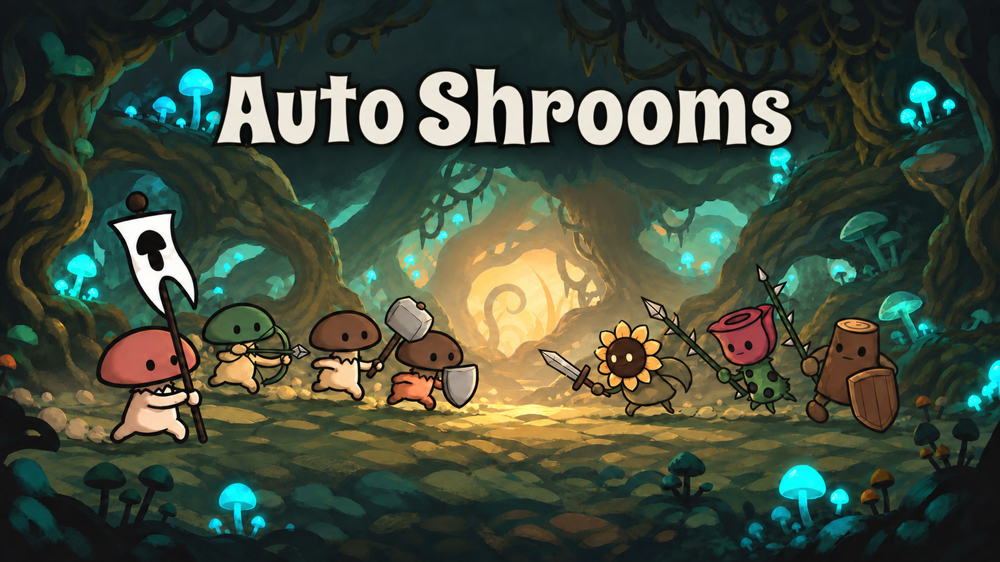

An auto-battler where you grow your own mushroom troop.
Plant spores, nurture strange mutations, and harvest your next recruits.
Train your mushrooms, combine weapon schools, and arrange your squad to face the chlorophyll heathen.
When an Adult falls, replant its spores. The next generation carries its legacy into battle.
Grow. Train. Fight. Replant. Fungus Vult!
Wishlist on Steam Watch trailer